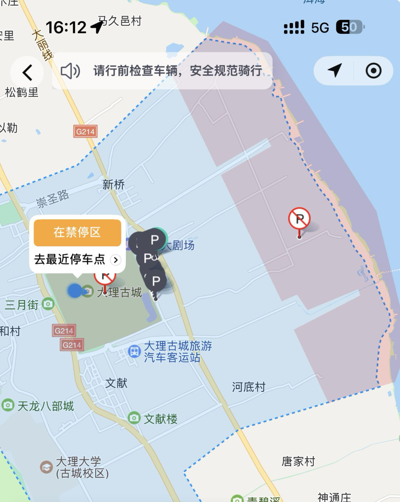
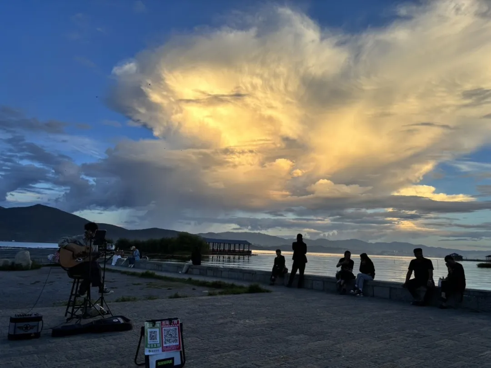
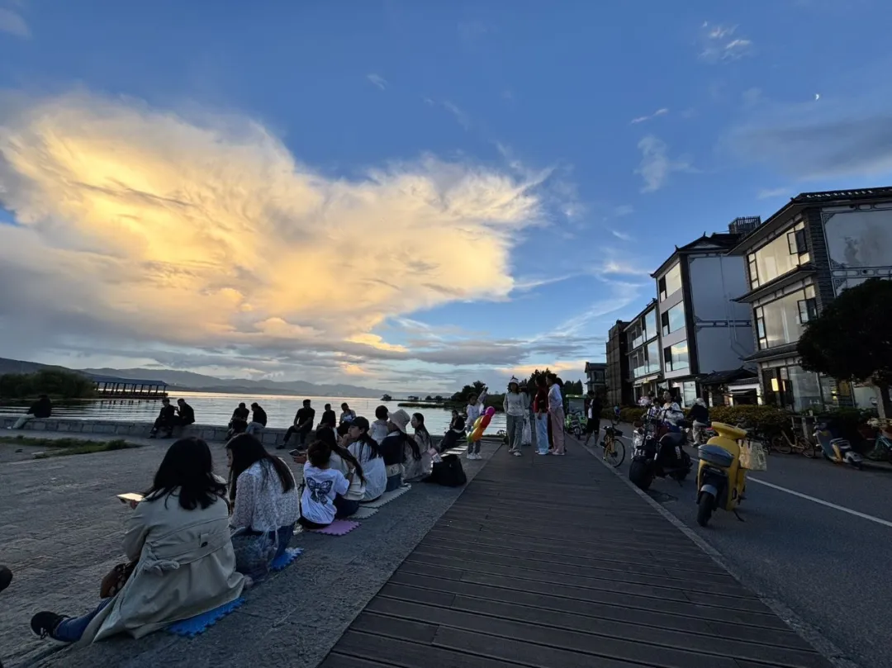
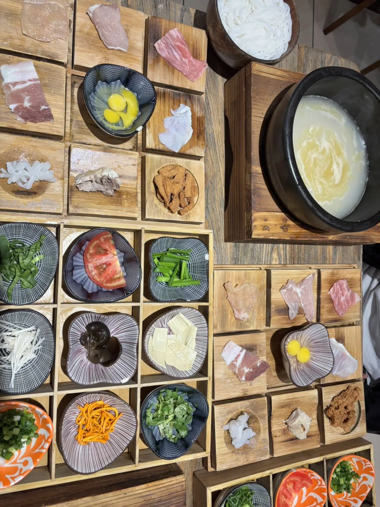

上接前文：我在云南吹风的日子（一）
从索道下来路过出口处，随手拍了一张，石头上刻的「苍山国家地质公园」八个字的颜色还是天空蓝，真好看。

从地图上可以看到，大理古城和洱海边一带，电单车禁停。
所以在马路边找了一辆青桔电单车，骑行穿越古城，尽可能骑到离洱海边最近的禁停点。到了那里再步行一二百米。
出了古城东门向北走一会儿，再向东一直走。向东这条路车辆稀少，两边是绿色的农田，随后开启了飞驰模式。
后来想想，真是匆匆忙忙。应该在路上多停留一会儿，看看背后的苍山、下午四点的夕阳、蓝天、白云、宽广的农田和宁静。

到了才村码头向北走三五分钟就来到了一片开阔地，往里是一条三五十米长的步道，尽头是一个凉亭。随后回到开阔地坐下一边发呆一边听小哥唱歌、看人来人往。

小哥除了自己唱外，人们还可以扫码付费点歌。慢慢地有更多的人坐下来听歌、享受这悠然的惬意。眼前的这般景象让人陶醉。我和在苍山认识的即将毕业的一个大学生小兄弟聊天、直播。
天色渐黑前，我们返回大理古城吃晚饭——吃米线。

这家店在闹市区，装修复古、人气也挺旺、饭菜量也挺大的、味道不错。
正好附近有一个电子篝火晚会，一边走一边欣赏古城夜晚的景象。很多很多人围着篝火转圈跳舞，相当热闹。
晚上的古城被节日的气氛笼罩着，很温馨。古城有序、干净、整洁，印象非常好。
时间不早时和大学生小兄弟分别，今天的一天的行程非常给力。初次来大理，收获了太多的精神能量。
大理，我爱你！